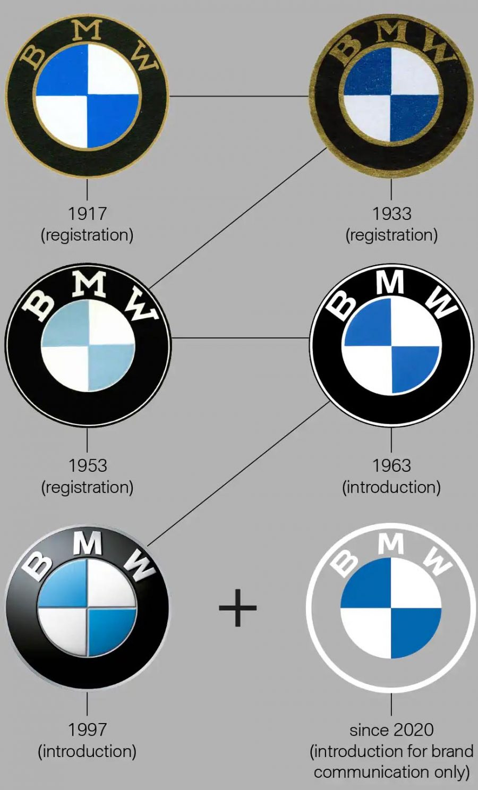

Bayerische Motoren Werke AG, commonly referred to as BMW, is a
German multinational corporate manufacturer of luxury vehicles and
motorcycles headquartered in Munich, Bavaria, Germany.
The corporation was founded in 1916 as a manufacturer of aircraft
engines, which it produced from 1917 until 1918 and again from
1933 to 1945.
Automobiles are marketed under the brands BMW, Mini and
Rolls-Royce, and motorcycles are marketed under the brand BMW
Motorrad.
In 2017, BMW was the world's fourteenth-largest producer of motor
vehicles, with 2,279,503 vehicles produced.
The company has significant motorsport history, especially in
touring cars, Formula 1, sports cars and the Isle of Man TT.
BMW is headquartered in Munich and produces motor vehicles in
Germany, Brazil, China, India, Mexico, the Netherlands, South
Africa, the United Kingdom, and the United States.
The Quandt family is a long-term shareholder of the company (with
the remaining shares owned by public float), following brothers
Herbert and Harald Quandt's investments in 1959 which saved the
company from bankruptcy.
How the BMW logo as changed:
The circular blue and white BMW logo or roundel evolved from the
circular Rapp Motorenwerke company logo, which featured a black
ring bearing the company name surrounding the company logo, on a
plinth a horse's head couped.
BMW retained Rapp's black ring inscribed with the company name,
but adopted as the central element a circular escutcheon bearing a
quasi-heraldic reference to the coat of arms (and flag) of the
Free State of Bavaria (as the state of their origin was named
after 1918), being the arms of the House of Wittelsbach, Dukes and
Kings of Bavaria.
However, as the local law regarding trademarks forbade the use of
state coats of arms or other symbols of sovereignty on commercial
logos, the design was sufficiently differentiated to comply, but
retained the tinctures azure (blue) and argent (white).
The current iteration of the logo was introduced in 2020, removing
3D effects that had been used in renderings of the logo, and also
removing the black outline encircling the rondel. The logo will be
used on BMW's branding but will not be used on vehicles.
The origin of the logo as a portrayal of the movement of an
aircraft propeller, the BMW logo with the white blades seeming to
cut through a blue sky, is a myth which sprang from a 1929 BMW
advertisement depicting the BMW emblem overlaid on a rotating
propeller, with the quarters defined by strobe-light effect, a
promotion of an aircraft engine then being built by BMW under
license from Pratt & Whitney.
For a long time, BMW made
little effort to correct the myth that the BMW badge is a
propeller.
It is well established that this propeller portrayal was first
used in a BMW advertisement in 1929, twelve years after the logo
was created, so this is not the true origin of the logo.
